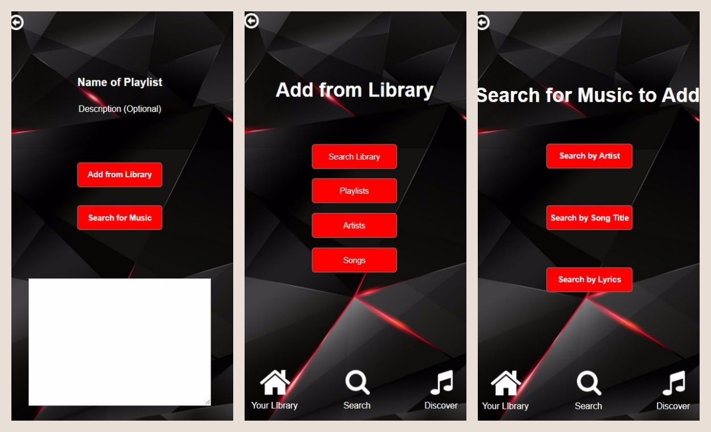
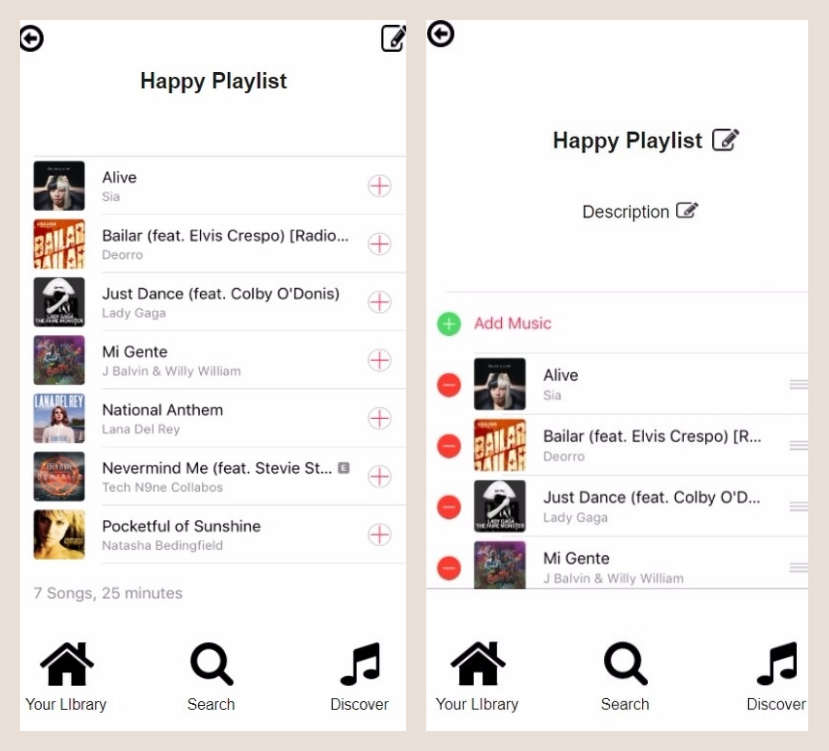

Creating a Playlist:

Editing a Playlist:

What is this?
A music application I designed independently for COGS 187A: Usability & Information Architecture.
We were instructed to come up with our own improvements for how to create and manage playlists in a music app.
The Process & Defining Design Decisions
I interviewed various people on the music application of their choice. I inquired about the playlists they create,
their favorite things about the application, and any problems they have experienced with it. I found that convenience is a very
large factor in what application people choose to use -- the application that comes with the phone has a definite leg
up. The next biggest factor was the number of features offered. Users particularly enjoyed applications that offered
them everything they could possibly want, allowing a varied musical experience. Small details tended to be a big issue
with users; applications that didn't constantly allow them a way to keep track of what they were doing and undo mistakes
ended up causing frustration.
I compared the three applications that were used among my pool of interviewees. I examined how a user would go about
performing three specific scenarios on each application: creating a playlist, managing a playlist, and searching for
music. The best applications had a conventional and therefore intuitive process that made multiple actions available in
one place. These guidelines helped shaped my following designs.
In the top right corner of a playlist, I put the universal "Edit" icon. This takes the user to the page where they can edit
the playlist title and description, and both add and delete songs from the playlist all on the same page. This allows them to
not only control all editing aspects on one page but allows them to visually see all of the playlist details while they edit
to lessen the chance of missed mistakes.
I implemented a back button in the top left corner of every page that isn't one of the main pages listed on the navigation bar.
This is regardless of whether they are a part of an entire process (e.g., creating a playlist) or their own page (e.g., searching
for music). This keeps their experience on a clear linear path that goes in both directions, with the option of exiting completely
and back to a main page also always available via the icon bar.
For the color scheme, I chose to forego a plain white background because it would be lacking in “identity”. When the user opens
up the app, I want them to immediately see the color scheme and make an association with the app. I chose a background that wasn’t
busy but still had some semblance of a design. I used this background and color scheme consistently on all of the pages except
the pages with the core contents of the app (playlist contents, list of artists, and list of songs) to differentiate them
from the other pages and put the focus on the content.